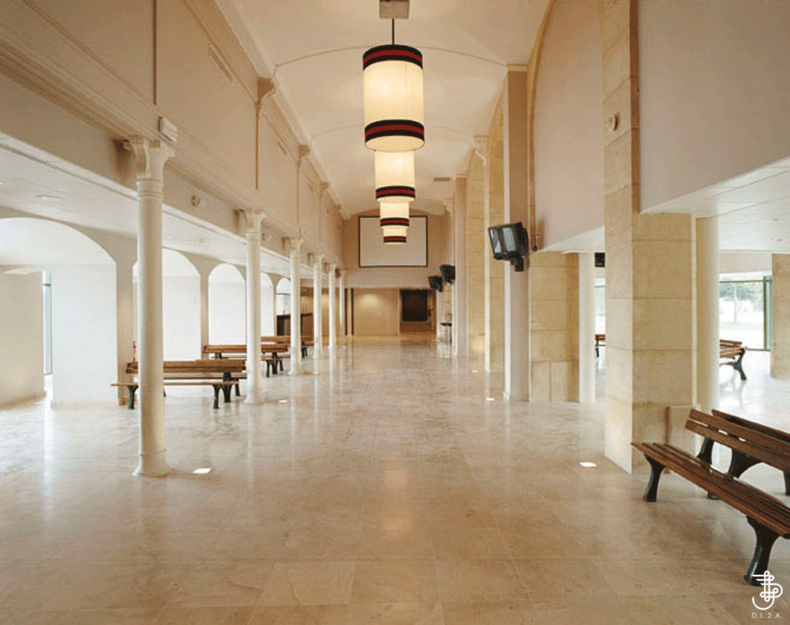

Coaxed gana de cabeza a cola el Prix des Reservoirs y da a Baaeed su segundo ganador de Grupo
La potra de Cheveley Park Stud tomó el mando nada más salir en el Grupo 3 de Chantilly y no cedió: ganó por tres cuartos de cuerpo a Malikat Al Remal, con Rymskhaya tercera.

Coaxed (Baaeed) salió con decisión del cajón y se hizo con la cabeza de la carrera sin discusión. Con el piso blando, recorrió en cabeza la milla del Darley Prix des Reservoirs, Grupo 3 para potrancas de dos años. Paró el crono en 1:41.67.
Con el cuarto de milla final por delante, Cristian Demuro la apretó. Coaxed no cedió terreno y aguantó la llegada: sacó tres cuartos de cuerpo a Malikat Al Remal (Ten Sovereigns) y otros tres cuartos a Rymskhaya (Mehmas), que fue tercera. Detrás quedaron Poppy Foxy, Shandiyana y Canapville. Coaxed partía como segunda favorita, a 2,30, y había sido tercera en el Grupo 3 Prestige de Goodwood en su salida anterior. Entrenada por John y Thady Gosden, cobró 36.600 euros de los 73.200 de dotación.
Es su primera victoria de Grupo y su primer black type. Había dejado atrás la condición de maiden en Kempton, en agosto, también desde cabeza. Con ella suma tres salidas: dos victorias y un tercer puesto.
Para Baaeed, su padre, es el segundo ganador de Grupo, tras Curracloe, vencedora del Grupo 3 Weld Park. Coaxed es hija de Persuasive (Dark Angel), ganadora del Grupo 1 Queen Elizabeth II, y hermana de madre de Creative Force, vencedor del Grupo 1 British Champions Sprint. Es también medio hermana de Cajole, ganadora del Listed October, y de Theoryofeverything, tercero en el Grupo 3 Greenham.
Chris Richardson, de Cheveley Park Stud, explicó que a la potra le gustó el piso blando y le encanta ir delante, y que con esto termina su temporada. «Ahora podemos soñar con volver a Francia para las Guineas francesas o el Oaks francés», añadió. Mencionó también un hermano entero de Coaxed que no se vendió en las subastas y que ahora entra a entrenar.
Por Martín Larrañeta